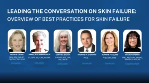
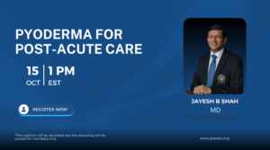
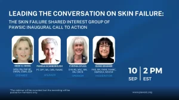
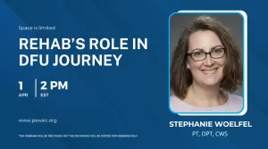
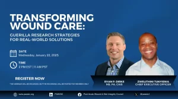
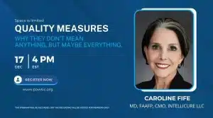
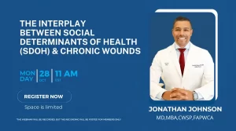
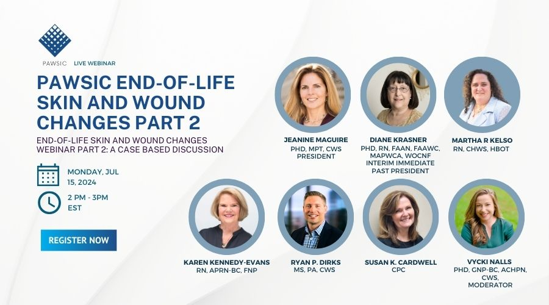
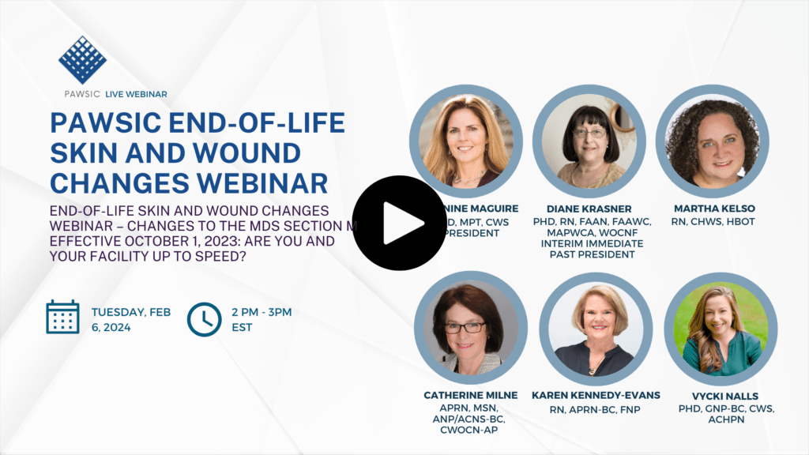

Webinars & Education
Webinars & Online
Webinars & Online
Education
Access live and on-demand webinars featuring clinical leaders and industry experts. Stay current on wound care, skin failure, compliance, and continuing education.
Upcoming
Upcoming Webinars
New webinars are being planned. Check back soon or join free to get notified when new sessions are announced.
Join PAWSIC Free →
On-Demand Library
Past Webinars & Recordings
Webinar recordings are available exclusively to PAWSIC members. Log in to your member account to access recordings, or join free to get started.
Wound Literacy and Patient Education: Advancing Understanding to Improve Outcomes

Leading the Conversation on Skin Failure: Overview of Best Practices

Pyoderma for Post-Acute Care

Leading the Conversation on Skin Failure: The SF SIG of PAWSIC Inaugural Call to Action
Technology in Wound Care: Imaging, Documentation & AI
Beyond the Mattress: Comprehensive Therapeutic Support Surface Strategies for PALTC
The Wound Provider Checklist: Are We Meeting the Needs of Patients?
Lymphatic Health: Why Recognizing and Treating Lymphedema Matters

Rehab's Role in DFU Journey
C.O.R.E.-Driven: Clinical and Compliance Workflow Strategies

Transforming Wound Care: Guerilla Research Strategies for Real-World Solutions

Quality Measures
Clinical & Compliance Workflow Dependencies

The Interplay Between Social Determinants of Health (SDOH) & Chronic Wounds

End-of-Life Skin & Wound Changes Webinar Part 2

End of Life Skin Wound Changes 2024
Navigating the Federal Survey Regulations for Skin & Wound Care in Skilled Nursing and Long Term Care
Access All Recordings
Join PAWSIC free to access our full webinar library, clinical tools, community forums, and newsletters.
Join PAWSIC Free →